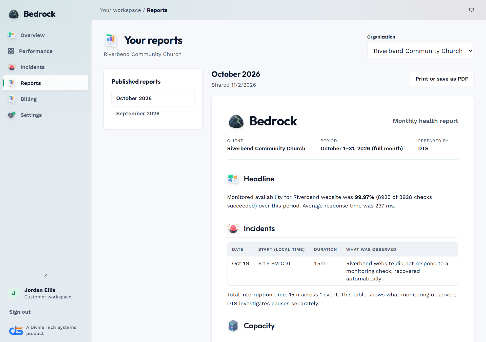
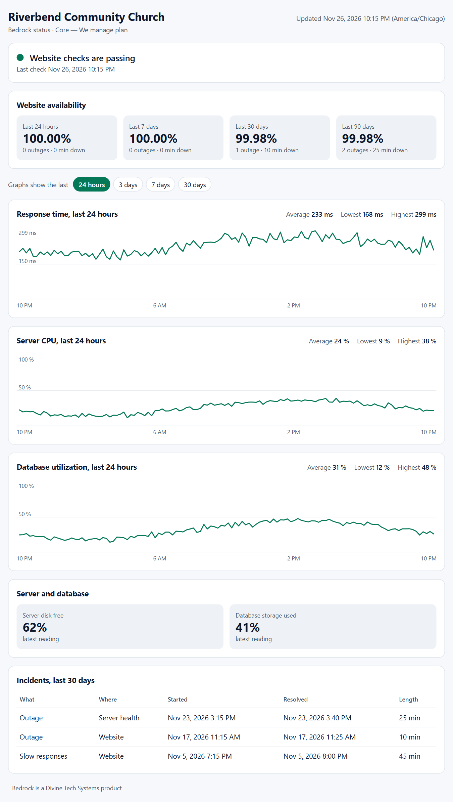

Bedrock
Reports
Each month DTS shares a health report for your church. The Reports page keeps every one that has been shared, newest first.

Reading a report
- Open Reports. The newest report opens by itself.
- To read an earlier one, pick its month under Published reports.
What a report covers depends on your plan. The usual sections are:
| Section | What it tells you |
|---|---|
| Headline | Your website’s availability for the month, how many checks that is based on, and the average response time. |
| Incidents | Each interruption: the date, the local start time, how long it lasted and what monitoring observed. |
| Capacity | How hard the server and database worked, and whether anything is getting close to a limit. |
| Patching | Whether system updates on your server are current. |
| Backup | Whether your server and database are being backed up, and when the last backup was taken. |
| Excluded from the figures above | What the headline figure deliberately leaves out, such as planned maintenance. |
| Recommendations | Anything DTS suggests you decide on. |
A report cannot be changed once it has been shared, so what you read is what was sent. Your first report appears once DTS has shared it; until then the page says so.
Printing or saving a report
- Open the report.
- Press Print or save as PDF.
- In your browser’s print window, choose your printer, or choose Save as PDF as the destination.
The list of reports and the print button are left off the printed page. This is the easiest way to pass a report to your board or leadership team.
A status report on your own Rock page
DTS can also give you a live status report that sits inside a page of your Rock site, so your staff can see it without signing in to Bedrock.

- Ask DTS for it. DTS gives you a short piece of code to paste into an HTML Content block on a Rock page, or adds it for you.
- Graphs show the last switches the graphs between 24 hours, 3 days, 7 days and 30 days. Move the pointer over a graph, or tap it, to read a value.
- The report refreshes by itself every few minutes.
Anyone who can open that Rock page can read the report, and the code is what unlocks it. Put it on a page only your staff can see, and do not share the code. If it may have been shared, ask DTS to replace it; the old code stops working.